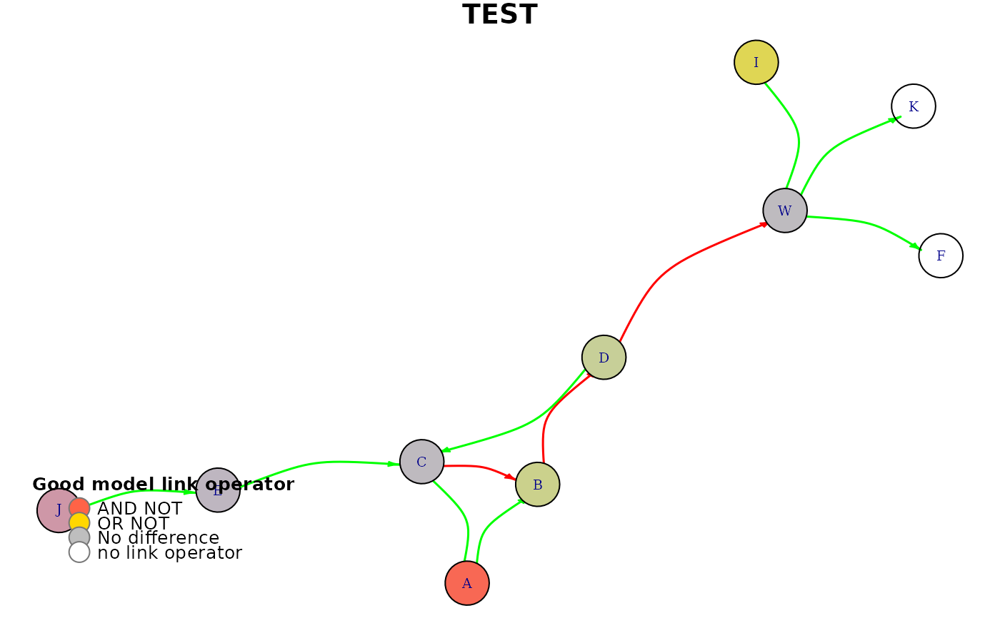

R/plot.R
plot_avg_link_operator_diff_graph.RdThis function uses the plot.igraph package to plot a network
of nodes. The nodes are positioned according to the specified coordinates
given by the layout parameter and the colors are derived using the
diff values and the get_node_colors function. The color
of each node indicates if the node's boolean function has on average the
AND NOT or the OR NOT link operator when comparing the average
model classified in the 'good' category vs the average bad' one. A non-colored
node (white) will indicate nodes that do not have the link operator in their
respective boolean equation (where they function as the target).
plot_avg_link_operator_diff_graph(net, diff, layout = NULL, title)
| net | igraph graph object |
|---|---|
| diff | numeric vector. Every value is in the [-1,1] interval and
represents the average link operator value difference of each node. The node
names have to be specified in the names attribute of the given vector.
For example, |
| layout | a (nx2) numeric matrix of x-y coordinates (2 columns) for each
of the nodes (n) in the |
| title | string. The title of the igraph plot |
Other network plotting functions:
plot_avg_link_operator_diff_graphs(),
plot_avg_state_diff_graph_vis(),
plot_avg_state_diff_graphs(),
plot_avg_state_diff_graph()
topology.file = system.file("extdata", "example.sif", package = "emba", mustWork = TRUE) net = construct_network(topology.file) diff = c(-0.95,-0.05,0.46,0.39,-0.04,0.72,-0.12,-0.51) names(diff) = c("A","C","B","D","W","I","E","J") plot_avg_link_operator_diff_graph(net, diff, title = "TEST")#> [1] TRUE